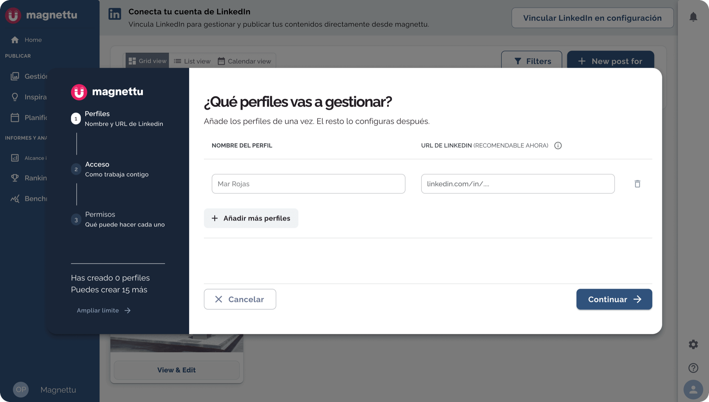
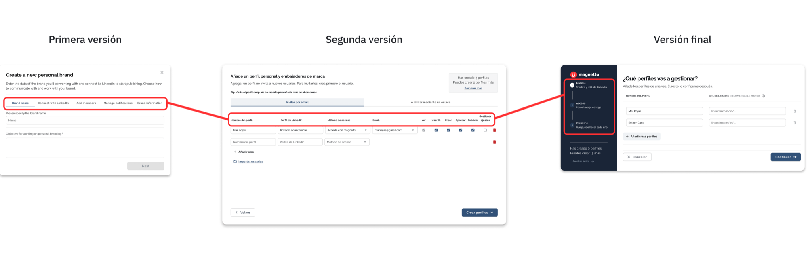
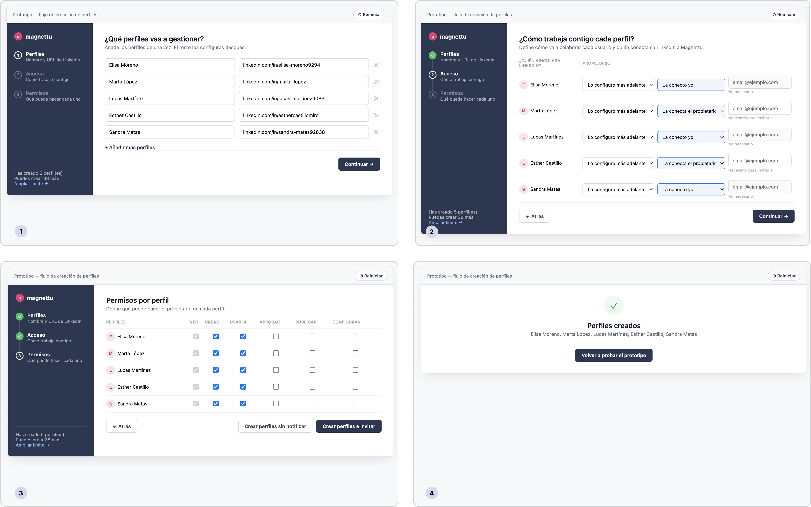
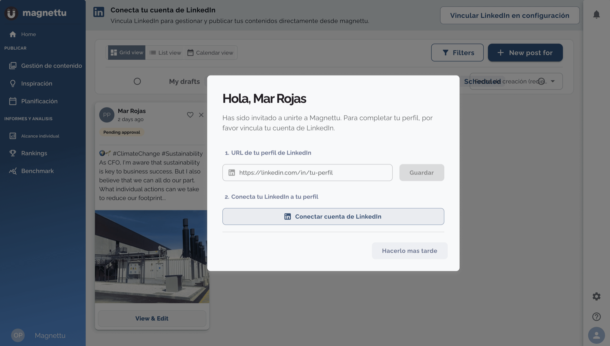

De un modal confuso a un flujo guiado
Rediseño de la creación de perfiles en Magnettu, prototipado de forma interactiva con IA.
- Reduje el flujo de un modal confuso a 3 pasos guiados
- Automaticé la conexión de LinkedIn con una sola pregunta nueva
- Prototipé con IA en vez de maquetar pantalla por pantalla
Este case study tiene dos fases: primero, el rediseño completo del flujo de creación de perfiles. Después, un detalle más pequeño pero igual de importante, el modal que resuelve cómo se conecta LinkedIn.
Contexto
Cuando entré en Magnettu, la plataforma aún no tenía ningún apartado pensado para agencias. Con el tiempo, la empresa pivotó hacia ese sector, y con eso llegó la necesidad de gestionar perfiles, usuarios y grupos, algo que hasta entonces no existía como tal.
La primera solución, diseñada por otra diseñadora del equipo sobre la que yo luego iteré, se llamó "Grupos y Miembros": un único espacio que mezclaba usuarios, perfiles y grupos sin distinción clara. Funcionaba, pero generaba confusión constante en el día a día.
El flujo de creación de perfiles
El problema
- Magnettu servía tanto a agencias (colaboración con clientes) como a departamentos de marketing con programas de employee advocacy.
- Para una agencia, el email del propietario era imprescindible. Para advocacy interno, pedirlo como obligatorio no tenía sentido.
- Por eso, los managers nos pedían ayuda constantemente para crear nuevos perfiles.
- Intentar simplificar el flujo para ambos casos generó fricción constante con cada caso de uso nuevo.
- Para entender qué necesitaba una agencia real, hicimos varias sesiones de research con una que ya usaba la herramienta.
Patrón observado en Datadog durante el uso del flujo anterior. Representación ilustrativa, sin cifras exactas disponibles.
Evolución del flujo, y por qué cada versión se quedaba corta
A partir de ese research, el flujo de creación de perfiles pasó por varias versiones:
4 tabs: nombre, objetivos, LinkedIn y permisos
El flujo pedía nombre de la marca, objetivos, conectar LinkedIn (opcional) e invitar usuarios con permisos, todo dividido en 4 pestañas.
- No se entendía cuándo había que meter el email del propietario de la marca.
- Muchos managers decían "lo haré después" y se olvidaban, dejando el perfil a medio configurar.
Todo en un solo modal, con reorganización de fondo
Nombre del perfil, URL de LinkedIn obligatoria y permisos, todo en una sola pantalla. También reorganicé la estructura: "marcas" pasó a llamarse "perfiles personales", y personales, empresa y grupos quedaron cada uno en su propia sección.
- Seguía sin entenderse por qué pedíamos cierta información.
- Algunos no querían añadir 50 marcas de golpe.
- Al ser la URL de LinkedIn obligatoria, muchos managers acababan pidiéndonos a nosotros mismos que creáramos los perfiles.
Mi rediseño
Rediseñé el flujo en 3 pasos separados en lugar de un único modal, con el objetivo de que la persona entendiera por qué se le pedía cada dato, no solo qué dato rellenar.
La pregunta clave del rediseño: ¿quién va a conectar LinkedIn?
Resolvía un problema concreto: los managers pedían a los propietarios que conectaran su cuenta, pero se olvidaban porque implicaba entrar en Magnettu. Ahora, si el manager elige "la conecta el propietario", este recibe un email de invitación automático, sin ese paso manual.

Cómo fue evolucionando
Algunas de las decisiones de este rediseño no son evidentes solo mirando las pantallas, así que las desgloso una por una.
El primer paso del rediseño no fue añadir algo nuevo, sino quitar fricción de lo que ya existía.
- Primera versión: el flujo tenía 5 pasos, empezando por el nombre de la marca y el objetivo, separados sin una prioridad real de qué información pedir antes.
- Versión final: unifiqué esos pasos en uno solo.
Al no ver toda la información de golpe, muchas personas decían "ya lo haré más tarde" y ese paso quedaba sin completar para siempre. Unificarlo resolvió justo eso.

Esta fue de las decisiones más delicadas del rediseño, porque tocaba directamente el problema de fondo: quién debía conectar LinkedIn y cuándo pedir cada dato.
- Primera versión: pedía nombre de perfil y objetivo. Se quitó el objetivo porque muchas personas no tenían uno claro, solo querían crear el perfil.
- Segunda versión: se añadió la URL de LinkedIn, el método de acceso y el email, este último condicionado al método elegido.
- Versión final: se mantuvo el nombre de perfil sin poder editarlo, se añadió la pregunta "¿quién va a conectar la cuenta?" (yo / el propietario / aún sin definir), y un botón para aplicar la configuración de la primera fila a todos los perfiles.
La pregunta sobre quién conecta la cuenta terminó siendo el cambio más importante de todo el flujo, resolvía el motivo real por el que los propietarios nunca conectaban su LinkedIn.

Otros ajustes del rediseño
- El flujo se comporta distinto según se cree 1 perfil o varios: con varios, se detiene en permisos; con uno, continúa a colaboradores y LinkedIn.
- En la versión original, un solo botón abría un desplegable con dos opciones: crear el perfil con notificación o sin ella. En la versión final, esas dos opciones pasaron a ser botones visibles directamente.
- Se añadió una nueva funcionalidad para poder editar los permisos u otras opciones globalmente.
- Se puede crear varios perfiles a la vez, con el copy "Añadir más perfiles".
Testeando el flujo con usuarios reales
- Partí de capturas estáticas de Figma y las convertí en un prototipo interactivo usando Claude, en lugar de maquetar pantalla por pantalla manualmente como en versiones anteriores.
- Le di a Claude un brief detallado: contexto del producto, objetivo del flujo y restricciones.
- A partir de ahí iteraba con Claude: testeaba el prototipo con usuarios reales, traía el feedback, y ajustaba el flujo en la siguiente ronda.
- Resultado: esto redujo drásticamente el tiempo de iteración frente a maquetar cada pantalla a mano, y el feedback que obtuve de los usuarios fue mucho más profundo, probaban un flujo real, con lógica real, no un mockup estático.

Nota: este prototipo es una representación del diseño para mostrar la lógica del flujo, no una réplica exacta al cien por cien del producto real.
Ver el diagrama completo del flujo en Figma →El modal de invitación
Conexión con LinkedIn
Cuando el propietario debe conectar LinkedIn, recibe este modal. Lo llevé un paso más allá del prototipo: directamente a código.
- Coincidió con una actualización del design system, así que el componente ya llegó alineado a los patrones nuevos.
- Entré en el código real de la app con Claude Code y Cursor, reutilizando componentes existentes.
- Diseñé la pantalla en Figma y pedí a Claude que la convirtiera en HTML listo para implementar.

El modal tiene dos versiones, según dónde complete el formulario la persona, no según quién creó el perfil:
- Por email: sin sesión iniciada, LinkedIn es obligatorio, sin opción de posponer.
- Dentro de Magnettu: con sesión activa, aparece como modal flotante, se puede posponer.
Hola, Mar Rojas
Has sido invitado a unirte a Magnettu. Para completar tu perfil, por favor vincula tu cuenta de LinkedIn.
Mockup de validación — no es el componente final de producción
Nota: representación del diseño, no réplica exacta del producto real.
Resultado
La versión final lleva unas semanas en producción. Los datos cuantitativos fueron poco concluyentes (solo una semana de datos reales), así que la validación vino sobre todo de sesiones reales grabadas en Datadog, viendo cómo los brand managers usaban el flujo.
Lo que se observó:
- Menos fricción al crear marcas. Los managers dejaron de pedirnos que creáramos los perfiles por ellos.
- Mejor entendimiento del formulario. Campos que antes se dejaban vacíos por no saber para qué servían, ahora se completan.
- La URL de LinkedIn sigue siendo el mayor punto de fricción, pero al ser opcional en este paso, ya no bloquea la creación del perfil como pasaba antes.
Aprendizajes
- Sin datos cuantitativos sólidos, observar sesiones reales de uso puede ser una fuente de validación igual de valiosa para detectar patrones de comportamiento.
- Resolver un problema de fondo, en este caso, quién conecta LinkedIn, tiene efecto más allá de la UI: se nota en ventas y en cuánto soporte manual necesita el equipo.